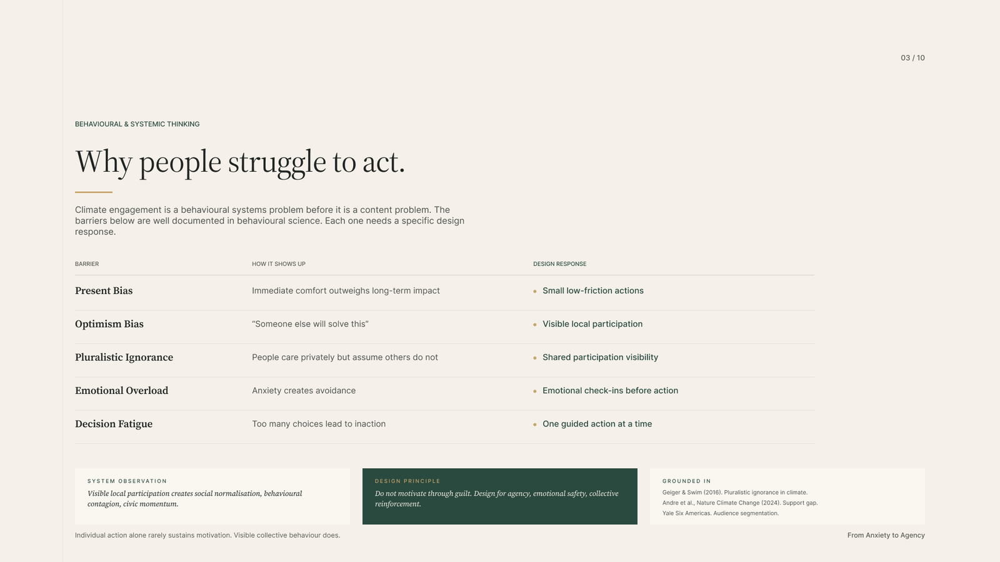
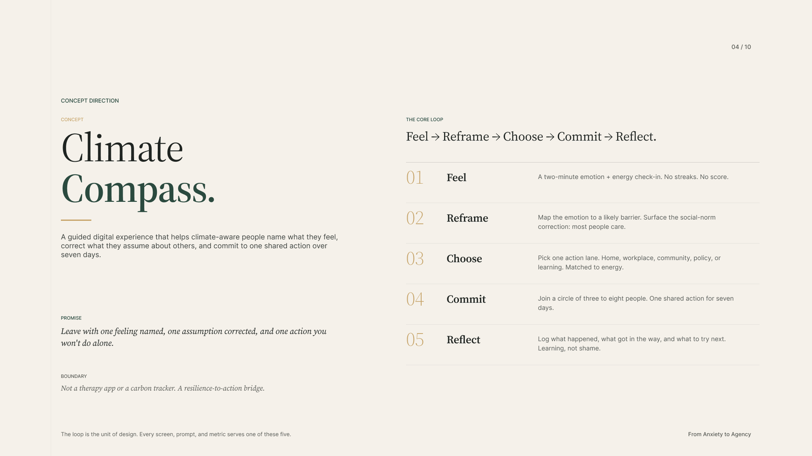
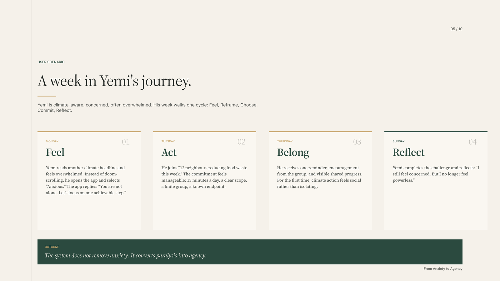
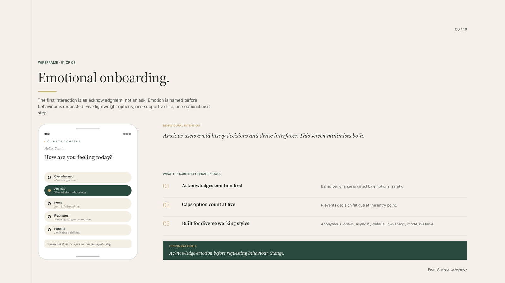
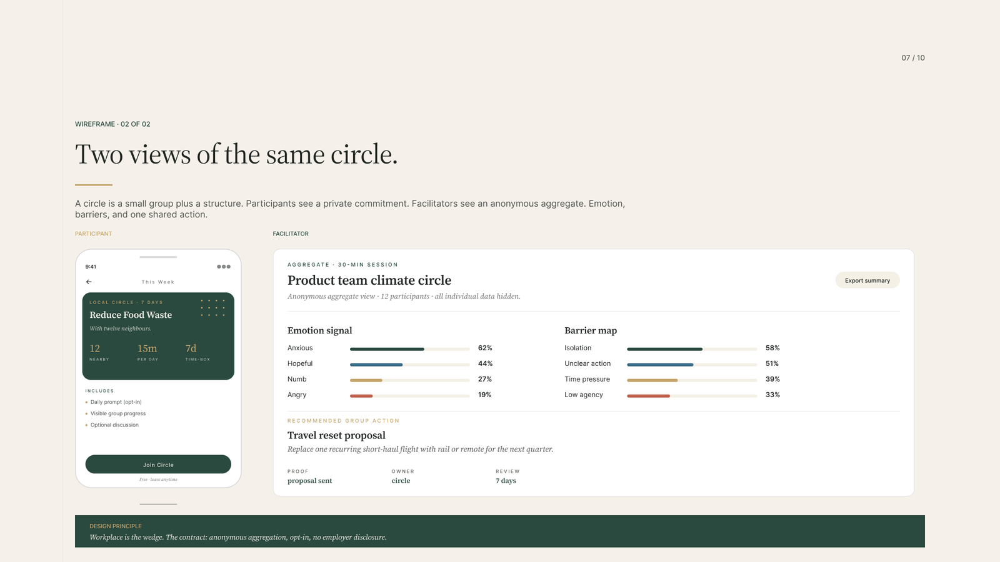
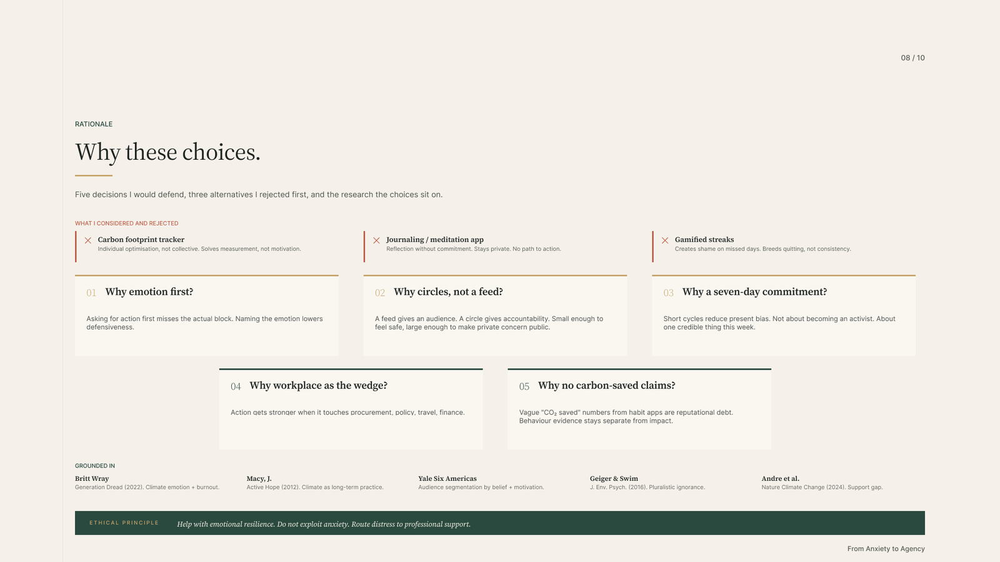
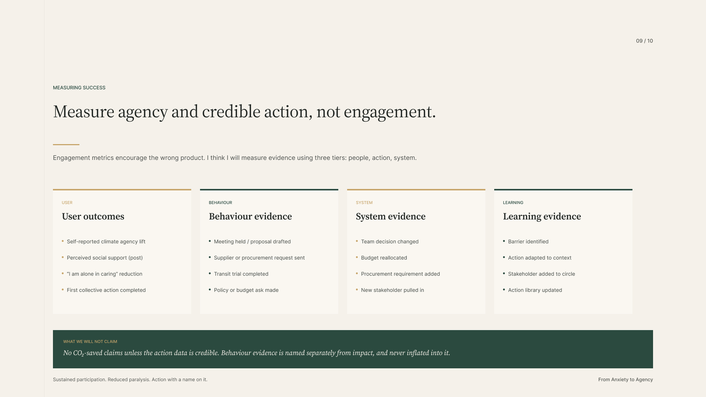

Climate action does not fail at awareness; it fails at emotional sustainability. Climate Compass is a guided experience that helps climate-aware people name what they feel, correct what they assume about others, and commit to one shared action over seven days.
Most people already know the crisis is real. They stay stuck between concern and action, not because information is missing, but because of emotional overload with no pathway to meaningful participation. Most climate products focus on awareness, emissions tracking, information delivery, and personal optimisation. What actually prevents action: emotional overwhelm, low perceived impact, social isolation, decision fatigue, and invisible collective momentum.
How might we help people process climate emotion and take one credible shared action, without shame or burnout?
People act when climate action feels manageable, social, and within reach.
Help climate-aware people name what they feel, see they are not alone, and commit to one shared action within seven days.
Climate engagement is a behavioural systems problem before it is a content problem. Five well-documented barriers, each with a specific design response. The research is tied to decisions, not cited for its own sake: Geiger & Swim on pluralistic ignorance is why the Reframe step surfaces a social-norm correction; Andre et al. in Nature Climate Change on the support gap is why the product makes collective participation visible; Yale's Six Americas segmentation is why action lanes are matched to energy rather than offered as one default.
Heavy headlines and doom-scrolling. Response: name the emotion first, with a low-energy mode for heavy days.
Acting alone feels pointless. Response: one credible shared action with a finite, time-boxed scope.
"I am alone in caring." Response: a circle of three to eight, not a feed.
Too many choices stall action. Response: option counts capped, one action lane at a time.
Others' support is unseen. Response: make local participation visible to normalise it.

Barrier → how it shows up → design response. The design principle: do not motivate through guilt. Design for agency, emotional safety, collective reinforcement.
A guided digital experience built on one loop: every screen, prompt, and metric serves one of its five steps. The promise: leave with one feeling named, one assumption corrected, and one action you won't do alone. The boundary: not a therapy app or a carbon tracker, but a resilience-to-action bridge.

Feel: a two-minute check-in, no streaks, no score. Reframe: map the emotion to a barrier, surface the social-norm correction. Choose: one action lane, matched to energy. Commit: a circle of three to eight, one shared action, seven days. Reflect: learning, not shame.
A climate-aware, often-overwhelmed user walks one full cycle: reads another heavy headline Monday and names "Anxious" instead of doom-scrolling; joins "12 neighbours reducing food waste this week" Tuesday, at 15 minutes a day, a clear scope, a finite group; feels climate action turn social rather than isolating by Thursday; and reflects on Sunday: "I still feel concerned. But I no longer feel powerless."

The outcome the system designs for: it does not remove anxiety; it converts paralysis into agency.
The first interaction is an acknowledgment, not an ask. Emotion is named before behaviour is requested: five lightweight options, one supportive line, one optional next step. Anxious users avoid heavy decisions and dense interfaces; this screen minimises both.

Deliberate choices: emotion acknowledged first, option count capped at five against decision fatigue, built for diverse working styles: anonymous, opt-in, async by default, low-energy mode available.
A circle is a small group plus a structure. Participants see a private commitment: "Reduce Food Waste, with twelve neighbours, 15 minutes a day, time-boxed to 7 days." Facilitators see an anonymous aggregate: emotion signal, barrier map, and one recommended group action. All individual data hidden.

Workplace is the wedge, with a contract: anonymous aggregation, opt-in, no employer disclosure.
Three alternatives rejected first: a carbon footprint tracker (individual optimisation, solves measurement not motivation), a journaling app (reflection without commitment, no path to action), and gamified streaks (creates shame on missed days; breeds quitting, not consistency). Then five decisions I would defend: emotion named first, circles instead of feeds, seven-day commitments instead of open-ended streaks, the workplace as the wedge, and no carbon-saved claims unless the action data is credible.

Emotion first, circles not feeds, seven-day commitments, the workplace wedge, and no carbon-saved claims, grounded in Wray, Macy, Yale Six Americas, Geiger & Swim, and Andre et al.
Engagement metrics encourage the wrong product. Evidence is measured in tiers instead: user outcomes (climate-agency lift, "I am alone in caring" reduction), behaviour evidence (meetings held, procurement requests, transit trials), system evidence (decisions changed, budgets reallocated), and learning evidence (barriers identified, actions adapted).

What we will not claim: no CO₂-saved numbers unless the action data is credible. Behaviour evidence is named separately from impact, never inflated into it.
The product names emotion to lower defensiveness, never to drive urgency. Clinical distress routes to professional support, not into the product loop.
Each refusal is load-bearing: guilt-driven action does not sustain, streaks breed quitting, and vague "CO₂ saved" numbers from habit apps are reputational debt.
A low-energy mode for heavy days. Built for diverse working styles and private processors. The system observation that drives it: visible local participation creates social normalisation, behavioural contagion, civic momentum.
The concept is a hypothesis; the next eight weeks close the gap with cross-functional work: research, design, climate-psychology partners, engineering, and business pilots.
6-8 interviews with climate-aware but inactive users. Three stakeholder chats: sustainability lead, HR/comms, climate-anxiety practitioner. Prototype the check-in flow for comprehension, emotional safety, action confidence.
Three moderated pilots across workplace and community cohorts. Solo vs circle comparison on action completion. Co-design action cards with sustainability and climate-psychology experts.
No-code build, just enough to run real circles at small scale. Facilitator templates: aggregate mood + barrier map + commitment board. Evidence standards: what counts as behaviour / system / learning proof.
Longer term: localise action libraries by region, partner with climate-psychology practitioners, and connect high-leverage circle actions to organisational climate plans. Validation before scale.
Asking for action first misses the actual block. Naming the emotion lowers defensiveness; the first screen is an acknowledgment, not an ask, and everything downstream works better because of it.
If the promise is agency, measuring engagement is dishonest. Splitting evidence into user, behaviour, system, and learning tiers keeps the product accountable to its own thesis, and keeps CO₂ theatre out.